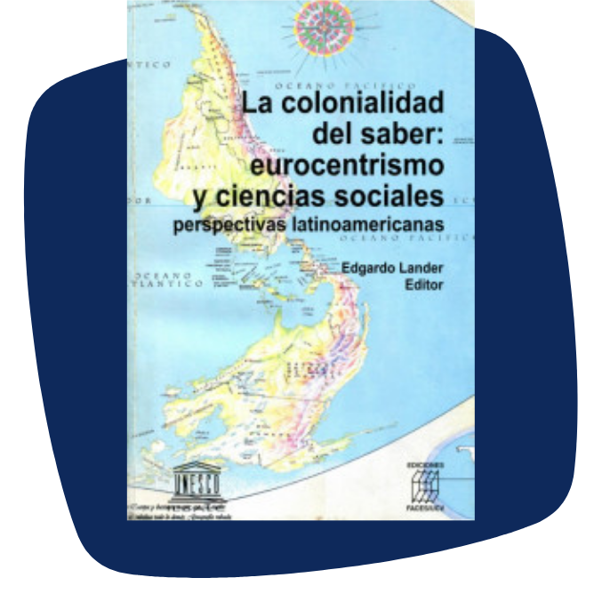

<!DOCTYPE html>
<html></html>
<head>
  <meta charset="utf-8">
  <meta http-equiv="X-UA-Compatible" content="IE=edge">
  <meta name="viewport" content="width=device-width, initial-scale=1">
  <link rel="stylesheet" type="text/css" href="../../styles/reset.css"/>
  <link rel="stylesheet" type="text/css" href="../../styles/animate.min.css"/>
  <link rel="stylesheet" href="style.css">
  <link rel="stylesheet" type="text/css" href="../../modules/flamboyant-props.min.css"/>
</head>
<body role="application">
  <header>
    <button class="acessBtn"></button>
    <button class="menuBtn" onclick="navigate.goto('pag09')"></button>
  </header>
  <interection>
    <div class="container-interaction-arrows bottom   ">
      <button class="container-arrow container-arrow-left arrow-left" tabindex="1001" role="button" aria-label="Voltar para a tela anterior." title="Seta para esquerda."></button>
      <button class="container-arrow container-arrow-right arrow-right pulse" tabindex="1000" role="button" aria-label="Avançar para a próxima tela." title="Seta para direita."></button>
    </div>
  </interection>
  <body class="color-bg-white">
    <div class="simplePage">
      <section class="full-H">
        <div class="container-template-wildcard prop-bg-fixed">
          <div class="row-wrap">
            <div class="col    col-01   left prop-pt10 prop-pb5 prop-tablet-pt7 prop-tablet-pb0" alt="" aria-label="" tabindex="-1">
              <div class="wrapper">
                <div class="container-image">
                </div>
                <p class="smalltext prop-m0 prop-txt-center" tabindex="1">La colonialidad del saber: eurocentrismo y ciencias sociales. Autor: Edgardo Lander, 2000.</p>
              </div>
            </div>
            <div class="col    col-02   prop-pt10 prop-pb5 prop-tablet-pt0 prop-tablet-pb7 right" alt="" aria-label="" tabindex="-1">
              <div class="wrapper">
                <p class="text" tabindex="2">A <b>teoria decolonial</b> é um movimento epistêmico, intelectual e político, composto por diversas correntes teóricas, que contesta e busca subverter a lógica dominante de produção de conhecimento centrada na Europa e nos Estados Unidos. Esse pensamento foi desenvolvido por um grupo chamado Modernidade/Colonialidade (M/C), fundado em 1998, formado por intelectuais que buscavam interpretar o mundo a partir da perspectiva da América Latina.</p>
                <p class="text" tabindex="3">A tese central do Grupo M/C é que a colonialidade é constitutiva da modernidade – sua face oculta – e uma das suas mais trágicas consequências, pois opera reforçando desigualdades históricas em diferentes níveis e espaços, mesmo após o seu término enquanto período histórico.</p>
              </div>
            </div>
          </div>
        </div>
      </section>
    </div>
  </body>
</body>
<script src="../../scripts/jquery.min.js"></script>
<script src="../../scripts/jquery-ui.min.js"></script>
<script src="../../scripts/jquery.ui.touch-punch.min.js"></script>
<script src="../../scripts/components.mixin.scripts.js"></script>
<script src="../../scripts/page.js"></script>
<script src="script.js"></script>